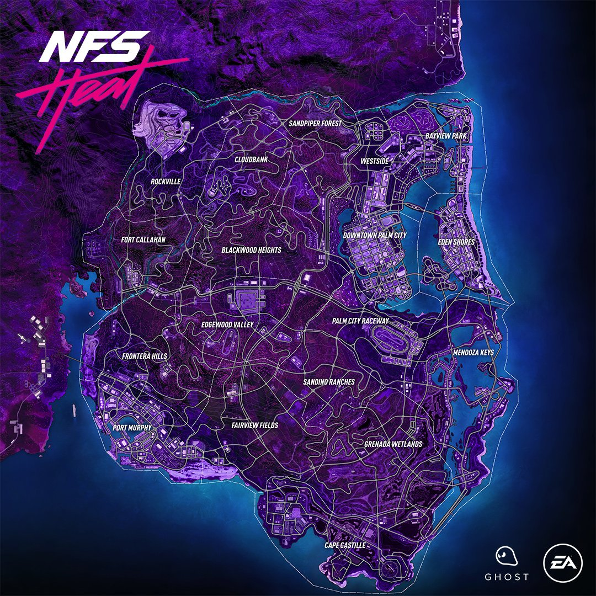

Palm City
Need for Speed Heat tem como pano de fundo Palm City, um paraíso para os pilotos de rua. Uma área metropolitana vibrante composta de muitos distritos diferentes entre si, todos prontos para serem explorados. De dia, Palm City é a sede do Speedhunters Showdown,, uma série de corridas oficiais onde você pode ganhar Saldo desafiando os limites em eventos de corrida, drift e off-road de alto risco.
Durante os dias em Palm City, você pode explorar um ambiente urbano ensolarado e iluminado. Encha sua garagem com os carros personalizáveis dos seus sonhos, monte uma equipe de pilotos igualmente sedentos pela velocidade e teste suas habilidades em competições legítimas contra os pilotos mais talentosos do mundo. Quando seu carro estiver pronto, enfrente a noite.
Need for Speed Heat é um jogo de corrida de mundo aberto ambientado em uma cidade conhecida como Palm City, uma versão ficcional da cidade de Miami, Florida. Diferente de Need for Speed Payback, Heat não tem um ciclo de 24 horas com dia e noite, no entanto os jogadores podem alternar entre dia e noite.
